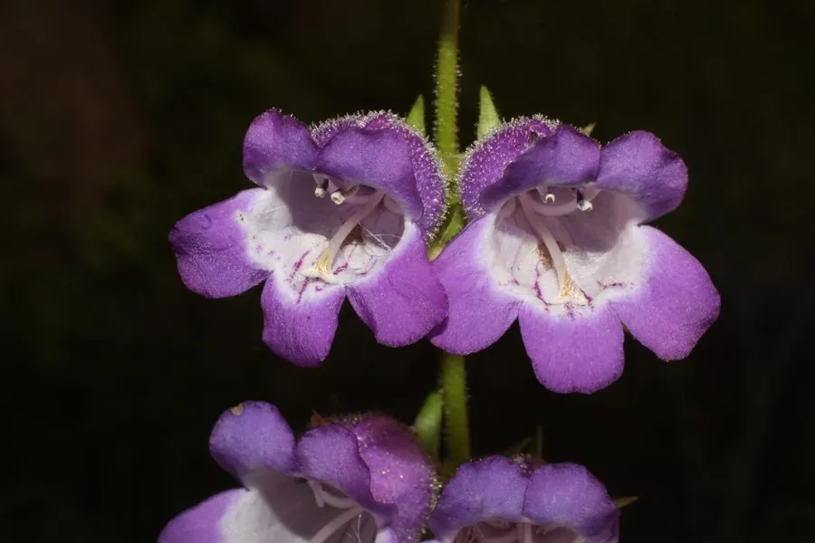

花卉与草本 · 植物界
钓钟柳 Penstemon campanulatus

车前科多年生草本，钟形花朵成串开放，花色从紫红到粉白，花期长，是花境中富有野趣的竖线条植物，原产墨西哥。
- 分类
- 门被子植物门纲木兰纲目唇形目科车前科属钓钟柳属
- 栖息环境
- 墨西哥山地，喜凉爽、阳光充足、排水良好
- 地理分布
- 原产墨西哥，中国各地花境引种栽培
- 保护级别
- 暂无评估
物种志
钓钟柳为车前科钓钟柳属多年生草本，株高 40–80 厘米，茎直立，多分枝。叶片披针形，对生，边缘有细齿。圆锥花序顶生，花冠钟形或管状，长 2–3 厘米，紫红、粉、白等色，花期 6–9 月；果实为蒴果。
钓钟柳原产墨西哥的山地，喜阳光充足、凉爽干燥和排水良好的环境，耐寒性一般，怕高温高湿和积水。它钟形花朵成串开放，花色柔和，花期长，是花境中富有野趣的竖线条植物，也常作切花；花后修剪可促进二次开花。栽培以分株、扦插为主，夏季高温时需适当遮阴，避免植株萎蔫。
形态与习性
- 株高40–80 厘米，茎多分枝
- 花期6–9 月，花冠钟形
- 果期花后结蒴果
- 光照喜充足阳光，夏季适当遮阴
- 水分喜湿润，忌积水
- 土壤疏松、排水良好的壤土
- 繁殖分株、扦插
- 主要用途花境竖线条、切花
趣味知识
- 钓钟柳的钟形花朵成串开放，花色从紫红到粉白都有。
- 它原产墨西哥山地，喜凉爽而怕高温高湿。
- 花期长，是花境中富有野趣的竖线条植物。
- 花后修剪可促进二次开花。